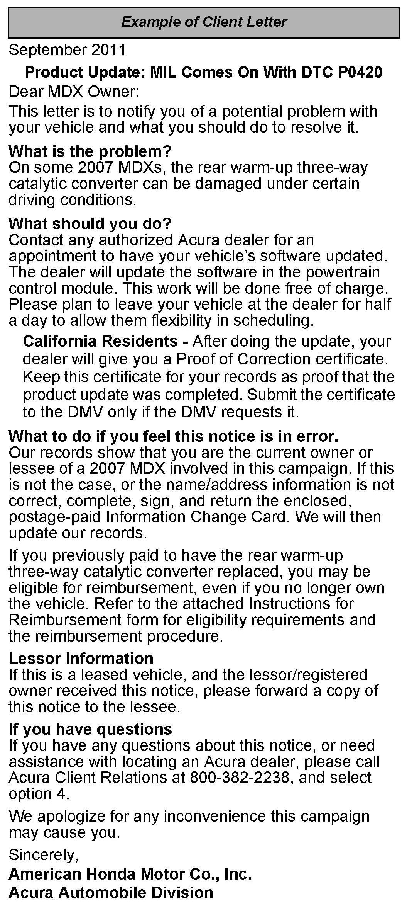

Recall - ECM Update For Catalyst Damage Prevention
11-017December 20, 2011
Applies To:
2007 MDX - Check the iN VIN status for eligibility
Product Update:
Software Update to Prevent Rear (Bank 1) Catalyst
Damage, Which May Set DTC P0420
(Supersedes 11-017, dated September 13, 2011, to revise the information marked by the black bars)
*REVISION SUMMARY
^ Under BACKGROUND, the note was changed.
^ Under CORRECTIVE ACTION, a note was added.*
BACKGROUND
The rear (bank 1) warm-up three-way catalytic converter may be damaged during certain driving conditions in cold ambient temperatures. The software update will prevent this damage from occurring.
*NOTE:
American Honda has extended the warranty on the rear (bank 1) warm-up three-way catalytic converter. Under the warranty, the replacement of the catalytic converter is covered if it is replaced due to DTC P0420. For more information, refer to Service Bulletin 11-018, Warranty Extension: Rear (Bank 1) Warm-Up Three-Way Catalytic Converter*
CLIENT NOTIFICATION

All owners of affected vehicles will be sent a notification of this product update.
Do an iN VIN status inquiry to make sure the vehicle is shown as eligible.
In addition, check for a punch mark above the first character of the engine compartment VIN. A punch mark in that location means this product update has already been completed.
Some vehicles affected by this campaign may be in your used vehicle inventory. Repair these vehicles before they are sold.
CORRECTIVE ACTION
Update the PGM-FI software.
*NOTE:
If DTC P0420 is stored, update the PGM-FI software, then continue with normal troubleshooting. If normal DTC P0420 troubleshooting indicates it's necessary to replace the rear (bank 1) warm-up three-way catalytic converter, the replacement is covered under the extended warranty. Other conditions that may require the replacement of the converter are not covered under the extended warranty. Refer to Service Bulletin 11-018 for more details.*
WARRANTY CLAIM INFORMATION
Operation Number: 1255A2
Flat Rate Time: 0.2 hour
Failed Part: P/N 37820-RYE-A59
Defect Code: 5MG00
Symptom Code: R9100
Skill Level: Repair Technician
SOFTWARE INFORMATION
NOTE:
Unnecessary or incorrect repairs resulting from a failure to update the HDS or MVCI are not covered under warranty.
MVCI Control Module (CM) Database Update:
27-JUL-2011 or later
HDS Software Version:
3.001.009 or later
Before beginning the repair, make sure that both the HDS and MVCI are updated as listed above. For more information about updating the HDS and the MVCI, refer to Service Bulletin 01-023, Updating Control Units/Modules.
The MVCI automatically checks the vehicle's reprogrammable systems and, if an update is available, displays that system on the System Selection screen. Select the system that is indicated in this service bulletin to update. Check that the MVCI indicates the applicable program ID listed on the following page (or a later program ID) as the Recommended Update when the update begins.
If the MVCI displays This vehicle does not need an update at this time during the update, the software for this service bulletin is already installed.
REPAIR PROCEDURE
1. Update the PGM-FI software. Refer to Service Bulletin 01-026, Updating Control Units/Modules.
2. Center-punch a completion mark above the first character of the engine compartment VIN:
3. For California Residents Only: Fill out a Vehicle Emissions Recall - Proof of Correction certificate, and use R91 as the recall number. Give the certificate to your client, and advise him or her to keep it as proof that the product update was completed. Your client will need to submit the certificate to the DMV only if the DMV requests it. If you need more certificates, use reorder number Y0657.

Disclaimer